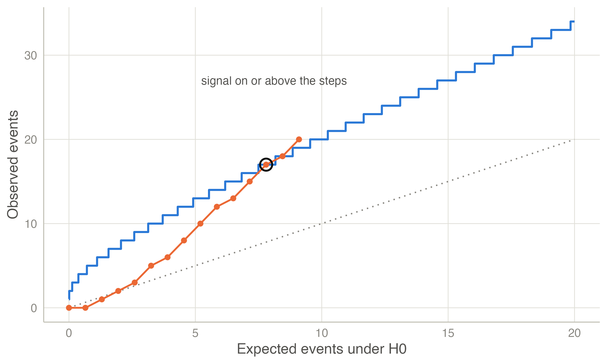
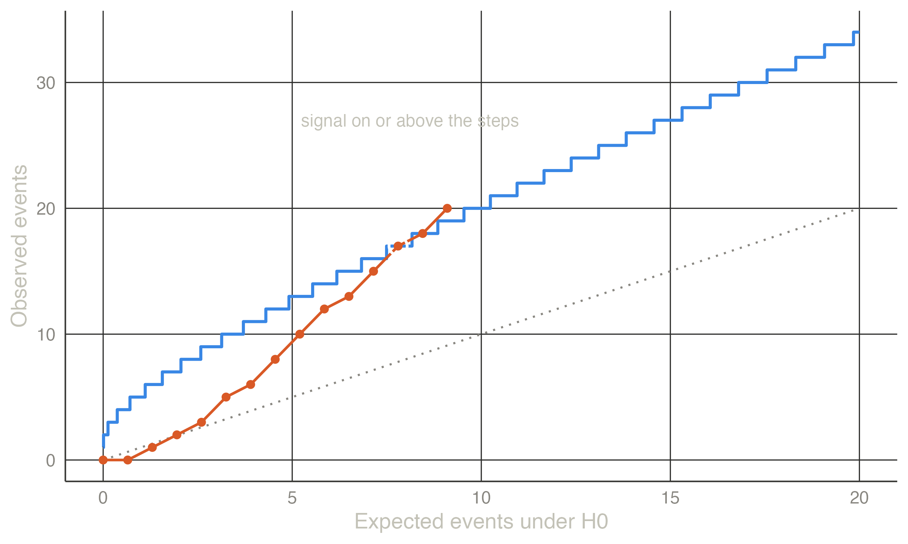

| Observed events | Observed / expected | LLR |
|---|---|---|
| 4 | 1.000 | 0.000 |
| 5 | 1.250 | 0.116 |
| 6 | 1.500 | 0.433 |
| 7 | 1.750 | 0.917 |
| 8 | 2.000 | 1.545 |
| 9 | 2.250 | 2.298 |
| 10 | 2.500 | 3.163 |
| 11 | 2.750 | 4.128 |
| 12 | 3.000 | 5.183 |
Safety surveillance: the MaxSPRT
Continuous or group monitoring of adverse events after licensure, with a composite alternative and exact critical values.
The surveillance problem
After a vaccine or drug is licensed, rare adverse events are monitored in near real time in large health-care databases. Each week brings new exposed persons and new events. The question is whether the observed count of an adverse event exceeds what would be expected, and the analysis is repeated every week for months or years (Yih et al. 2011; Nelson et al. 2015). Repeated testing must control the overall false-alarm probability. Unlike a trial, there is no specific alternative: any increase in risk matters.
The maximized SPRT
Kulldorff et al. (2011) replaced the simple alternative of Wald’s SPRT with a composite one, relative risk \(\mathrm{RR} > 1\), and maximised the likelihood ratio over it. For Poisson data, with \(c_t\) observed and \(\mu_t\) expected events by time \(t\),
\[ \mathrm{LLR}_t = \begin{cases} (\mu_t - c_t) + c_t \ln(c_t/\mu_t) & \text{if } c_t > \mu_t,\\ 0 & \text{otherwise.} \end{cases} \]
A signal is raised the first time \(\mathrm{LLR}_t\) reaches a critical value \(\mathrm{CV}\). The critical value is computed exactly so that the probability of any signal before the end of surveillance is \(\alpha\) under \(H_0\). The end of surveillance is defined by an upper limit \(T\) on the expected count. Variants include:
- Binomial MaxSPRT for self-controlled and matched designs. Each event falls in the risk window or in a control window, and the matching ratio fixes the null probability.
- Conditional MaxSPRT for when the expected counts are estimated from historical data.
- Minimum events. A minimum number of events can be required before a signal, which avoids signals from one or two early events.
Continuous versus group monitoring. Testing at every new event maximises timeliness. Testing at fixed intervals (group sequential MaxSPRT) loses little and matches how data arrive in practice (Silva and Kulldorff 2015). The type I error can also be distributed over the looks with an optimal alpha spending (Silva et al. 2020). For a review of the statistical methods used in near-real-time vaccine safety surveillance, see Leite et al. (2016).
How the statistic behaves
The table shows the LLR for several observed counts when 4 events are expected. The critical value depends on \(\alpha\) and \(T\); a signal needs clearly more events than expected.
Example: designing and running a surveillance
A new vaccine is monitored for an adverse event. Surveillance runs until 20 events are expected under \(H_0\) (\(T = 20\)), with \(\alpha = 0.05\) and continuous monitoring.
| RR | Power | Time to signal | Length | Power, 5 looks | Time to signal, 5 looks |
|---|---|---|---|---|---|
| 1.500 | 0.450 | 8.677 | 14.908 | 0.544 | 10.860 |
| 2.000 | 0.921 | 6.964 | 7.996 | 0.954 | 8.312 |
| 3.000 | 1.000 | 2.669 | 2.670 | 1.000 | 4.696 |
| 4.000 | 1.000 | 1.409 | 1.409 | 1.000 | 4.089 |
The exact critical value is 3.628123, as in the R package Sequential. With a relative risk of 2, the surveillance signals 92 % of the time, on average after 7.0 expected events. The last two columns show a group version with five looks, at 4, 8, …, 20 expected events. Counts are discrete, so the group design attains α = 0.0463 rather than exactly 0.05. Its critical value is lower (2.217) because fewer tests are made. The group design has more power, but it signals later: continuous monitoring buys timeliness, not power.
The dataset Safety surveillance (shipped with the module) holds weekly cumulative counts. In week 12, 17 events have been observed against 7.8 expected (observed / expected = 2.18). The LLR reaches 4.04 and exceeds the critical value, so the MaxSPRT signals. A signal calls for a confirmatory study, not a final verdict: the estimate at the signal is biased upwards, like any estimate at a sequential stopping time.


TipIn jmsequential
Sequential → Safety Surveillance (MaxSPRT) (version 0.3.0).
- Model: Poisson (observed against expected counts) or binomial (cases in the risk window against the control window, with matching ratio z).
- Design: α, surveillance length (T expected events, or N cases), minimum number of cases for a signal, continuous or group monitoring (equally spaced or custom looks).
- Design results: the exact critical value and attained α, the cases needed for a signal at each point, and power, expected time to signal and expected length of surveillance for the chosen relative risks.
- Data: cumulative observed cases and expected counts (or all cases, binomial), one row per look. The analysis reports the LLR, the relative risk and the decision at each look, and plots the counts against the signalling boundary.
The methods are reimplemented from the published papers; the R package Sequential, by the authors of Silva and Kulldorff (2015), is used only to check the results.
The example in jamovi
- Open the data set Safety surveillance - weekly counts (☰ → Open → Data Library → jmsequential).
- Sequential → Safety Surveillance (MaxSPRT): the defaults are the design of the example (Poisson, α = 0.05, T = 20, continuous monitoring).
- In the Analysis of observed data box, move cases to Observed cases and expected to Expected under H0.
The design summary gives the critical value, 3.628123, and the Performance table the first columns of Table 2. The Surveillance table signals in week 12: 17 cases against 7.8 expected, an LLR of 4.04 above 3.63. The Signalling boundary plot is Figure 1.

References
Kulldorff, Martin, Robert L. Davis, Margarette Kolczak†, Edwin Lewis, Tracy Lieu, and Richard Platt. 2011. “A Maximized Sequential Probability Ratio Test for Drug and Vaccine Safety Surveillance.” Sequential Analysis 30 (1): 58–78. https://doi.org/10.1080/07474946.2011.539924.
Leite, Andreia, Nick J. Andrews, and Sara L. Thomas. 2016. “Near Real‐time Vaccine Safety Surveillance Using Electronic Health Records—a Systematic Review of the Application of Statistical Methods.” Pharmacoepidemiology and Drug Safety 25 (3): 225–37. https://doi.org/10.1002/pds.3966.
Nelson, Jennifer C, Andrea J Cook, Onchee Yu, Shanshan Zhao, Lisa A Jackson, and Bruce M Psaty. 2015. “Methods for Observational Post-Licensure Medical Product Safety Surveillance.” Statistical Methods in Medical Research 24 (2): 177–93. https://doi.org/10.1177/0962280211413452.
Silva, I. R., and M. Kulldorff. 2015. “Continuous Versus Group Sequential Analysis for Post‐market Drug and Vaccine Safety Surveillance.” Biometrics 71 (3): 851–58. https://doi.org/10.1111/biom.12324.
Silva, Ivair R., Martin Kulldorff, and W. Katherine Yih. 2020. “Optimal Alpha Spending for Sequential Analysis with Binomial Data.” Journal of the Royal Statistical Society Series B: Statistical Methodology 82 (4): 1141–64. https://doi.org/10.1111/rssb.12379.
Yih, W. Katherine, Martin Kulldorff, Bruce H. Fireman, et al. 2011. “Active Surveillance for Adverse Events: The Experience of the Vaccine Safety Datalink Project.” Pediatrics 127 (Supplement_1): S54–64. https://doi.org/10.1542/peds.2010-1722i.